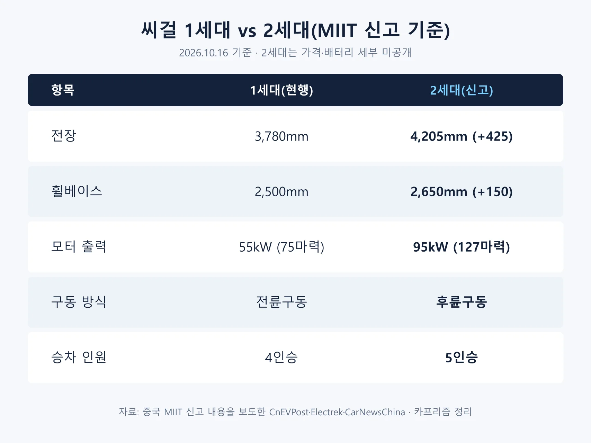
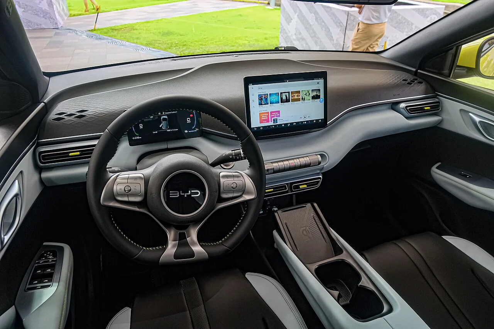
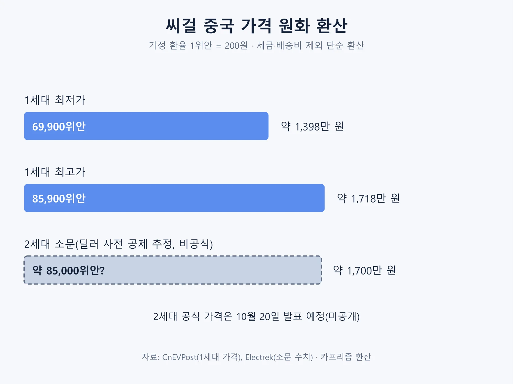
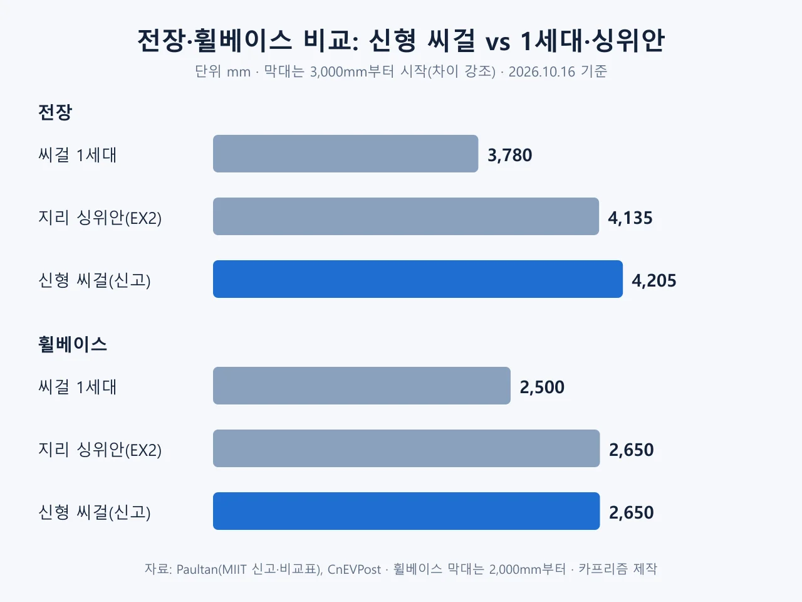
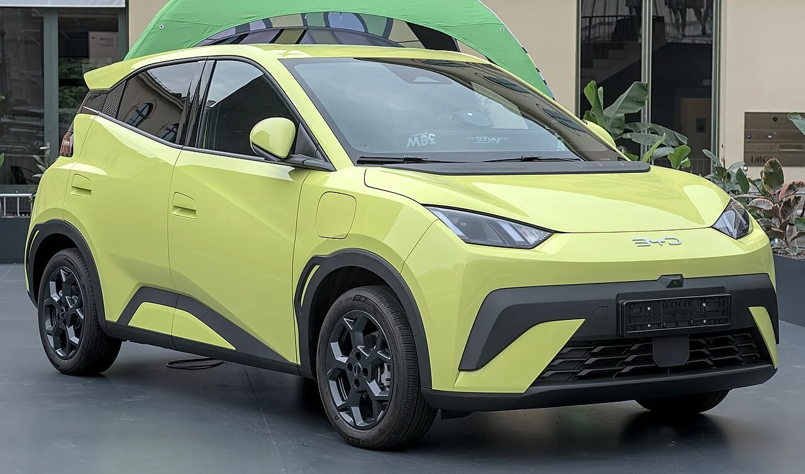
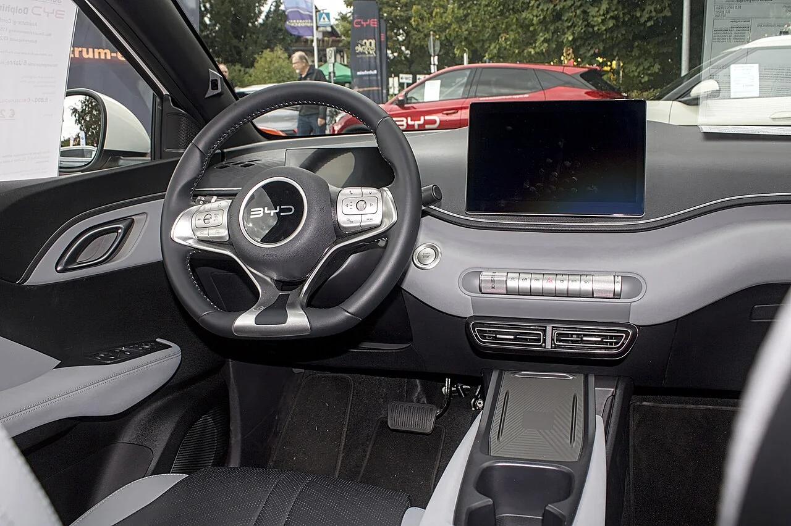
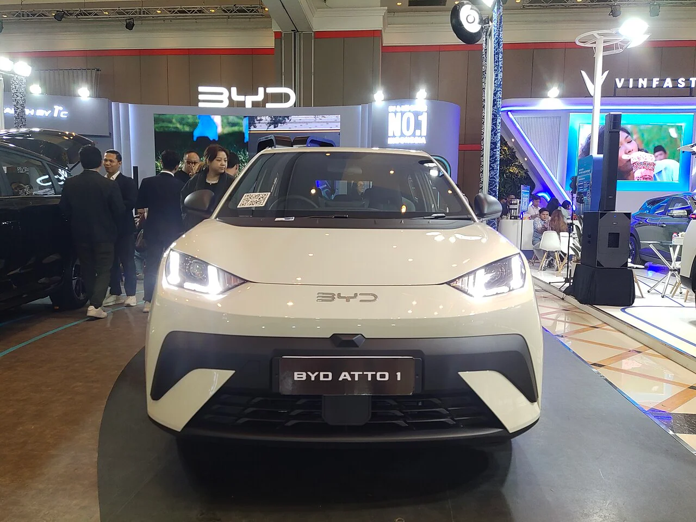
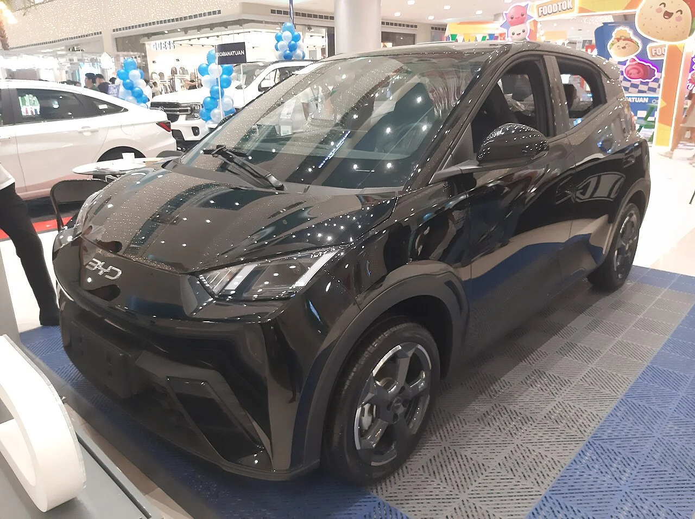

▲ 현행 1세대 씨걸. 10월 20일 출시 예정인 2세대는 전장이 425mm 길어진다 ⓒ Captainmorlypogi1959, Wikimedia Commons (CC BY-SA 4.0)
"다음 주 출시"라는 말 한마디에 이름만 같은 다른 차가 온다. 이번에 나오는 씨걸(Seagull)은 5월에 나온 개선 모델이 아니라, 전장이 425mm 길어지고 모터가 뒤로 옮겨 앉은 외신 표현상의 2세대다.
전기차 매체 일렉트렉(Electrek)은 10월 14일 BYD가 업데이트된 씨걸을 다음 주에 선보인다고 전했다. 출시일은 10월 20일, 장소는 정저우 국제 서킷이다. 이 글은 일렉트렉·CnEVPost 등 외신 보도와 중국 공업정보화부(MIIT) 신고 내용을 정리한 것이며, 모든 수치는 2026년 10월 16일 기준이다. 가격은 아직 나오지 않았다.
1. 출시일은 10월 20일, 다만 BYD 공식 발표는 아직
일렉트렉은 IT홈(IT Home News)이 입수한 미디어 초청장을 근거로 신형 씨걸이 10월 20일 정저우 국제 서킷에서 출시되며, 가격도 그날 공개된다고 보도했다. 일렉트렉 보도 바로가기 CnEVPost는 같은 날짜를 중국 매체 이처(Yiche)가 BYD 발로 전했다고 쓰면서, BYD가 공식 채널로 날짜를 확정하지는 않았다고 덧붙였다. CnEVPost 보도 바로가기 그전까지 BYD가 공식적으로 밝힌 것은 "올해 안에 출시"가 전부였다.
사전 계약은 이미 열렸다. 10월 9일 가격 없이 받는 이른바 블라인드 예약이 시작됐고, 외장 색상은 6가지다. BYD 오션 시리즈 판매를 맡은 장줘(Zhang Zhuo) 총경리가 웨이보로 이를 알렸다. 중국 매체 보도에 따르면 예약금은 2,000위안(약 40만 원, 1위안=200원 가정)이며 구매 의사 확인용으로 환불할 수 있다. 사전 예약 보도 바로가기
▲ 현행 1세대 씨걸. 이번에 출시되는 2세대와는 차체 크기와 구동 방식이 다르다 ⓒ Captainmorlypogi1959, Wikimedia Commons (CC BY-SA 4.0)
2. 무엇이 달라졌나: 크기·구동·좌석이 바뀌었다
MIIT 신고 내용을 보도한 외신들의 수치는 서로 일치한다. 전장 4,205mm, 전폭 1,810mm, 전고 1,570mm, 휠베이스 2,650mm다. Paultan이 실은 비교표에서 1세대는 전장 3,780mm, 휠베이스 2,500mm, 전폭 1,715mm, 전고 1,540mm여서 전장은 425mm, 휠베이스는 150mm, 전폭은 95mm, 전고는 30mm 커진 셈이다.
| 항목 | 1세대(현행) | 2세대(신고) |
|---|---|---|
| 전장 | 3,780mm | 4,205mm(+425mm) |
| 휠베이스 | 2,500mm | 2,650mm(+150mm) |
| 전폭×전고 | 1,715×1,540mm | 1,810×1,570mm(+95mm, +30mm) |
| 모터 출력 | 55kW(75마력) | 95kW(127마력) |
| 구동 | 전륜구동 | 후륜구동(모터 후축 이동) |
| 승차 인원 | 4인승 | 5인승 |
| 뒤 서스펜션 | 토션빔 | 독립식 멀티링크 |
| 공차중량 | - | 1,180kg(기본), 1,255kg(상위) |
| 최고속도 | - | 150km/h |
※ 출처: CnEVPost, Electrek, CarNewsChina, Paultan 보도. 1세대 수치는 Paultan 비교표 기준
출력은 55kW에서 95kW로 올라 약 73% 늘었다(95÷55). 모터가 뒤축으로 옮겨가면서 앞쪽에 짐칸(프렁크)이 생겼고, 이처 보도에 따르면 용량은 94리터다. 뒷좌석을 접었을 때 최대 적재량은 1,380리터로 전해졌는데, 두 수치 모두 이처 단독 보도라서 공식 제원이 나오면 확인이 필요하다. 타이어는 205/60 R16이며 1세대의 165·175mm 폭 타이어보다 넓어졌다. CarNewsChina 보도 바로가기

▲ 씨걸 1세대와 2세대 제원 비교 도표 자료: MIIT 신고 내용 보도 종합, 카프리즘 제작
3. 배터리와 충전: 어디까지 확인됐나
배터리는 BYD 계열 핀드림스(FinDreams)의 LFP(리튬인산철) 블레이드 배터리 2종으로 보도됐다. 일렉트렉은 CLTC 기준 주행거리를 최대 320km와 420km로, CarNewsChina는 10월 13일 기사에서 용량을 30kWh와 39.2kWh로 적었다. CarNewsChina 보도 바로가기 반면 Paultan은 7월 MIIT 신고를 다루면서 용량과 주행거리가 공개되지 않았다고 썼다. 보도마다 확인 범위가 다르다는 뜻이다.
| 항목 | 내용 | 확인 상태 |
|---|---|---|
| 배터리 종류 | 핀드림스 LFP 블레이드 배터리 2종 | 여러 매체 일치 |
| 용량 | 30kWh / 39.2kWh | CarNewsChina 단독 |
| CLTC 주행거리 | 320km / 420km | 일렉트렉·CarNewsChina |
| 플래시 충전(1,500kW) | 상위 트림 10→70% 5분, 10→97% 9분 | 일렉트렉 보도, 다른 매체는 "미확인" |
| 블레이드 배터리 2.0 적용 | 상위 트림 기대 | BYD 미확인 |
※ CLTC는 중국 기준이라 실제 주행거리는 이보다 짧다. CarNewsChina는 WLTP 환산치를 262~344km로 적었다
충전 성능은 특히 조심해야 한다. 일렉트렉은 상위 트림에 1,500kW 플래시 충전이 들어가 10%에서 70%까지 5분, 97%까지 9분이 걸린다고 썼다. 하지만 같은 일렉트렉이 닷새 전 사전 예약 기사에서는 "BYD가 배터리 사양을 확인하지 않았다"며 플래시 충전을 기대치로만 적었다. CarNewsChina도 10월 13일 기사에서 플래시 충전 지원과 10→97% 9분을 전했지만 이전 기사에서는 공식 충전 속도가 없다고 했고, 10월 14일 기사는 이를 기대 사양으로 분류했다. 이 글에서는 확정 사양이 아니라 외신 보도로 분류한다. BYD의 플래시 충전 인프라 현황은 1만 개소 돌파 기사에서 볼 수 있다.
📍 숫자를 읽을 때 주의할 점
주행거리·충전 시간은 20일 공식 발표 전까지 확정치가 아니다. 특히 CLTC 320·420km는 유럽 WLTP 기준으로는 약 262km·344km로 환산된다는 보도가 있어, 해외 판매 모델 수치와 직접 비교하면 안 된다.
4. 실내와 운전자 보조: 계기판이 사라진다
BYD가 공개한 실내 스케치와 외신 보도를 종합하면 방향은 분명하다. 운전석 앞 별도 계기판이 없어지고 주행 정보는 가운데 떠 있는 듯한 중앙 화면에 모인다. 스티어링 휠은 투 스포크이며, 공조구 아래에는 물리 버튼이 가로로 늘어선다. 센터 브리지에는 컵홀더 2개와 무선 충전 패드가 들어간다. 이처에 따르면 앞좌석 전동 조절과 운전석 마사지, 뒷좌석 송풍구도 마련된다.
1세대 실내와 비교하면 차이가 크다. 아래 사진은 현행 1세대 씨걸 실내로, 스티어링 휠 뒤에 별도 계기판이 보인다.

▲ 현행 1세대 씨걸 실내. 신형은 계기판을 없애고 중앙 화면에 정보를 통합하는 것으로 보도됐다 ⓒ Ethan Llamas, Wikimedia Commons (CC BY-SA 4.0)
운전자 보조는 모든 트림에 시속 140km 고속 타이어 파손 안정 시스템이 들어가고, 상위 트림은 루프에 라이다(LiDAR)를 얹은 갓스아이 B(DiPilot 300)를 고를 수 있다고 일렉트렉은 전했다. 5월에 나온 1세대 개선형이 이미 선택형 라이다를 도입했으니, 2세대에서는 이를 이어받은 셈이다.
5. 가격: 1세대 기준선과 소문
2세대 가격은 20일에야 나온다. 지금 확인되는 기준선은 1세대다. 5월 출시된 2026년형 씨걸은 6만 9,900위안에서 8만 5,900위안이었다. 일렉트렉은 2세대에 대해 딜러가 약 8만 5,000위안을 미리 공제한다는 근거 불명의 온라인 소문이 돈다고 소개했을 뿐, 이를 확인하지는 않았다.
| 구분 | 위안 | 원화 환산 | 비고 |
|---|---|---|---|
| 1세대 최저가 | 69,900 | 약 1,398만 원 | 2026년 5월 출시가 |
| 1세대 최고가 | 85,900 | 약 1,718만 원 | 라이다 선택형 트림 포함 범위 |
| 2세대 소문 | 약 85,000 | 약 1,700만 원 | 비공식, 확인되지 않음 |
| 유럽 돌핀 서프 | - | - | 22,900유로(약 2만 5,000달러), 일렉트렉 보도 |
※ 환율은 1위안=200원으로 단순 가정한 값이며 실제 환율·관세·세금과 다르다. 69,900×200=13,980,000원 등

▲ 씨걸 중국 가격 원화 환산 도표(1위안=200원 가정) 자료: CnEVPost·Electrek, 카프리즘 환산
▲ 분홍색(시셸 핑크) 1세대 씨걸. 신형도 핑크를 포함한 6가지 색상으로 예약을 받고 있다 ⓒ Ethan Llamas, Wikimedia Commons (CC BY-SA 4.0)
CnEVPost에 따르면 씨걸의 2025년 판매량은 52만 9,537대였다. 2023년 4월부터 올해 9월까지 누적은 약 155만 대이며, 9월 판매량은 3만 8,650대로 전년 동월보다 11.75% 늘었다. 다만 1~9월 누적은 26만 5,901대로 전년 대비 33.22% 줄었다. 판매가 꺾인 시점에 체급을 키운 신형을 내놓는 셈이다.
경쟁 구도도 달라졌다. Paultan에 따르면 신형 씨걸(전장 4,205mm, 휠베이스 2,650mm)은 지리 싱위안(해외명 EX2, 전장 4,135mm, 전폭 1,805mm, 전고 1,570mm, 휠베이스 2,650mm)보다 70mm 길다. 싱위안은 지난해 46만 5,000대 넘게 인도돼 씨걸의 50만 대 남짓에 근접했고, 올해 6월에는 씨걸보다 3배 넘게 팔렸다. 차체를 키우는 것이 곧 이 체급을 겨냥한 선택이라는 해석이 가능하다. 가격은 CarNewsChina가 10만 위안(약 2,000만 원) 미만으로 내다봤으나 BYD가 확인한 값은 아니다.

▲ 신형 씨걸과 1세대·지리 싱위안의 전장·휠베이스 비교 도표 자료: Paultan·CnEVPost, 카프리즘 제작
✅ 20일 발표에서 확인할 것
· 공식 가격과 트림 구성(위안)
· 배터리 용량과 CLTC 주행거리, 플래시 충전 지원 트림
· 중국 외 시장 판매 계획과 해외 차명
6. 해외 이름과 한국 판매 가능성
씨걸은 시장마다 이름이 다르다. 유럽·영국은 돌핀 서프(Dolphin Surf), 중남미는 돌핀 미니(Dolphin Mini), 인도네시아·태국 등 아시아·태평양은 아토 1(Atto 1)이다. 일렉트렉은 2세대 해외형도 비슷한 이름을 쓸 것으로 내다봤지만, 새 차명이나 해외 출시 시점은 확인되지 않았다. 일렉트렉은 2026년 1~8월 누적 기준으로 씨걸(돌핀 서프·미니 포함)이 세계 6위 전기차였다고 클린테크니카 자료를 인용했다.

▲ 유럽명 돌핀 서프. 1세대 씨걸의 수출형이다 ⓒ Alexander Migl, Wikimedia Commons (CC BY-SA 4.0)

▲ 돌핀 서프 실내. 해외 판매형은 시장별로 사양이 다르다 ⓒ Alexander Migl, Wikimedia Commons (CC BY-SA 4.0)

▲ 인도네시아 GIIAS 2026(반둥)에 전시된 아토 1. 아시아·태평양에서 쓰는 1세대 씨걸의 이름이다 ⓒ M Raisfath, Wikimedia Commons (CC BY 4.0)
한국은 어떨까. 씨걸의 국내 출시 계획은 확인되지 않았다. 국내에서는 돌핀·아토 3·씰 등이 판매 중이고, BYD코리아가 올해 2월 국내에 들여온 소형 해치백도 돌핀이었다. 돌핀은 세제 혜택 후 보조금 적용 전 기준 2,450만 원(돌핀 액티브 2,920만 원)으로, 위 표의 1세대 씨걸 환산가(약 1,398만~1,718만 원)보다 높다. 관련 내용은BYD코리아 2026 로드맵 기사에 있다. 국내 가격 정보는 아토 3 가격·보조금 기사와 아토 8 유럽 공개 기사로 이어서 볼 수 있다. 말레이시아 사례처럼 완전 수입 전기차에 최저가격 제한을 둔 시장에서는 씨걸이 한 번도 판매된 적 없다고 Paultan은 전했다. Paultan 보도 바로가기

▲ 쇼핑몰에 전시된 1세대 씨걸. 해외 전시 차량이라 외장 디테일이 시장마다 다를 수 있다 ⓒ Captainmorlypogi1959, Wikimedia Commons (CC BY-SA 4.0)
중국 업계 전반의 가격 경쟁은 7년 할부 경쟁 기사에서 다뤘다. 지난 8월 28일 보도한 그레이트 씨걸 기사는 당시 MIIT 신고 직후 정보를 담았고, 이번 글은 출시일과 사전 예약 소식을 더한 후속이다. 다만 두 기사의 전제가 다르다. 그레이트 씨걸 기사는 씨걸과 돌핀 사이에 신설되는 별개 모델이라고 썼는데, 이는 8월 24일 CarNewsChina가 전한 장줘 총경리의 "BYD 그레이트 씨걸(大海鸥) 이름으로 올해 국내 출시" 발언에 근거한 해석이다. 반면 CnEVPost·일렉트렉은 10월 보도에서 같은 제원(전장 4,205mm, 95kW)의 차를 2세대 씨걸로 부른다. 기존 씨걸이 20일 이후에도 병행 판매될지는 어느 보도에도 없어 확인되지 않는다.
7. 요약
BYD 씨걸 2세대는 10월 20일 중국에서 출시될 것으로 보도됐다. 날짜는 외신 보도 기준이며 BYD 공식 확정은 아직이다. 전장 4,205mm, 휠베이스 2,650mm로 1세대보다 각각 425mm·150mm 늘었고, 95kW 모터가 뒤로 옮겨 후륜구동이 됐으며 5인승이 된다.
배터리는 LFP 2종(30kWh·39.2kWh, CLTC 320km·420km 보도)이지만 충전 사양은 외신마다 엇갈린다. 가격은 미공개이고, 1세대 기준선은 6만 9,900~8만 5,900위안(약 1,398만~1,718만 원, 1위안=200원 가정)이다. 한국 출시는 확인되지 않았다. 2026년 10월 16일 기준이며 20일 발표 후 달라질 수 있다.